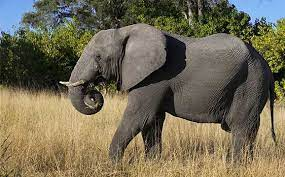

¿Qué son?
Son animales mamíferos, exclusivamente herbívoros cuya característica
principal –además del gran tamaño– es su larga trompa y sus
enormes orejas. Se organizan en manadas de unos 20 miembros,
miden casi 4 metros los ejemplares más grandes y pueden llegar
a pesar más de 6.000 kilos. Suelen vivir alrededor de 70 años
y tienen el periodo de gestación más largo de todos los animales:
22 meses. Nada más nacer, las crías ya pesan más de 100 kilos.
¿Inteligentes?
Debido a su gran tamaño, tienen también un
cerebro muy grande por lo cual son animales
muy inteligentes a los que se asocian comportamientos
como el duelo por una pérdida, la asociación
con otros miembros, el uso de herramientas,
la adopción, el juego e incluso el autorreconocimiento.

Mariposas
Leon
Pinguino
Aguila
¡Hablame!!!